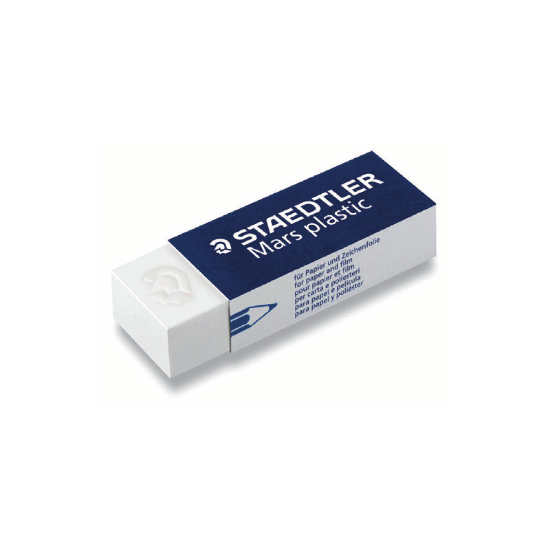

Une gomme, gomme à effacer, ou efface au Canada, est, dans le domaine du dessin et de l'écriture, un objet mou, en caoutchouc ou en matière plastique, qui sert à effacer les traits faits par le crayon, le fusain ou dans certains cas l'encre.
| Petite gomme mapped |  | 2$90 |